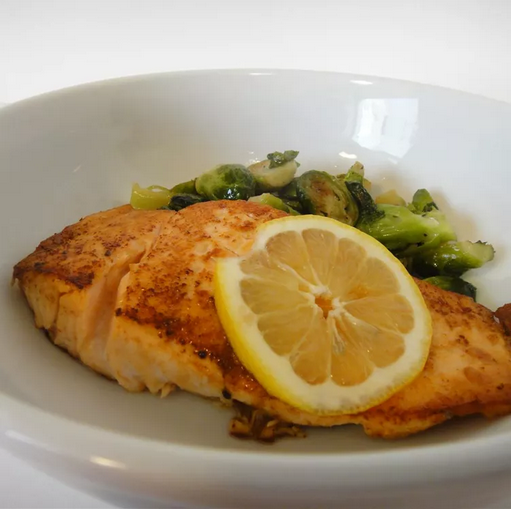

Easy 5 Ingredient Salmon

Description
This easy salmon recipe is a delicious way to prepare fresh fillets using just a few ingredients from your pantry.
Ingredients
- 1 tablespoon garlic powder
- 1 tablespoon dried basil
- 1/2 teaspoon salt
- 4 fillets salmon
- 2 tablespoons butter
- 4 lemon wedges
Steps
- Stir garlic powder, basil and salt together in a small bowl. Rub the mixture evenly over salmon.
- Melt butter in a large skiller over medium heat. Add salmon and cook until browned and flaky, about 5 minutes per side.
- Serve salmon with lemon wedges.